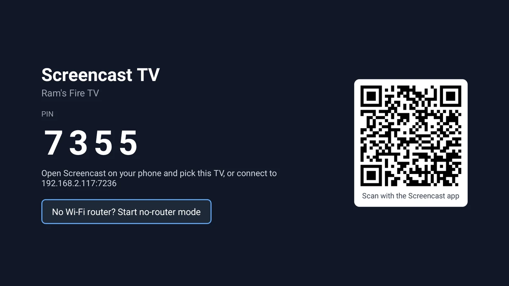
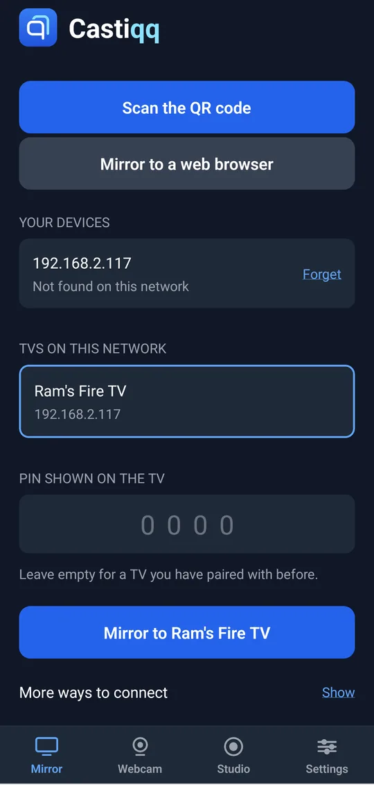
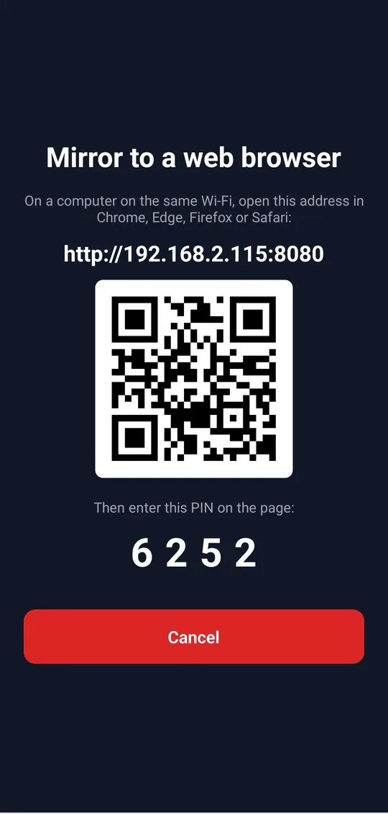
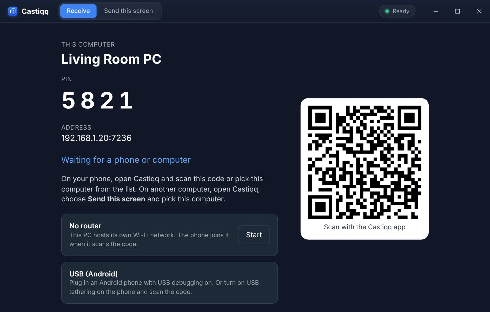
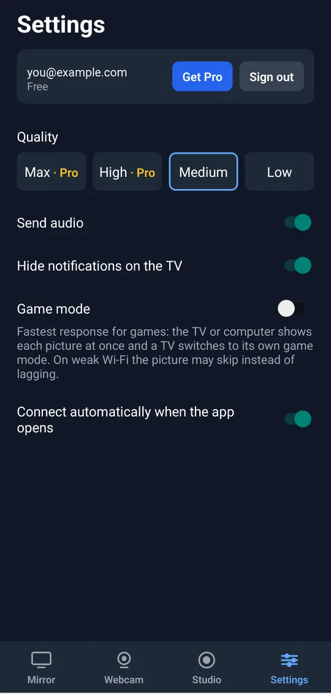
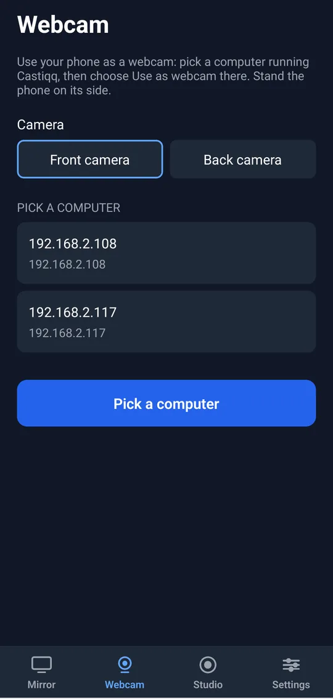
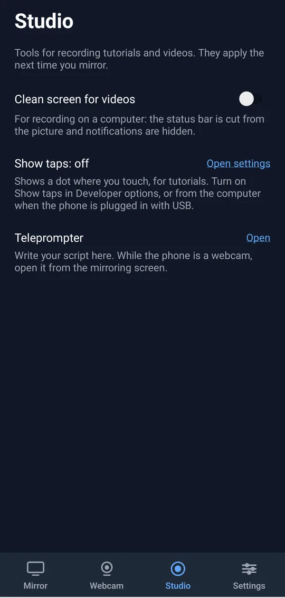

Finds your TV on Wi-Fi
TVs on your network appear in the app on their own. No IP addresses, no setup screens.
Castiqq mirrors your Android phone or iPhone to Android TV, Fire TV, Windows or Mac, with sound in lip-sync. Send a computer's screen to a TV or another computer too. Pair with a QR code or PIN and start watching.
Free to download. Castiqq Pro unlocks Max quality, up to 4K at 60 fps.


Everything you need to watch, play and present on the biggest screen in the room, from your phone or your computer.
TVs on your network appear in the app on their own. No IP addresses, no setup screens.
Scan the code on your TV or type the 4-digit PIN. Only paired phones can cast.
In a hotel or dorm? The TV hosts its own hotspot, and a Windows PC uses Wi-Fi Direct, so your phone connects straight to it.
Max sends your phone's screen at its full resolution, up to 4K at 60 fps. High gives 1080p, and Medium and Low suit slower networks.
Your phone's audio plays through the TV, matched to the picture so voices line up with lips.
Works with Android TV, Google TV and Amazon Fire TV, from Android phones and iPhone.
Show your phone on your computer, or send a computer's screen to a TV or to another computer.
Plug an Android phone into your computer and mirror over the cable for a steady, low-lag picture.
Keep messages and alerts off the big screen while you mirror, so your guests only see what you show them.

Open the app and your TV is already there. Pair the first time and Castiqq remembers it.

Use your computer as a big screen for your phone, or share your computer's screen with the TV or another computer.

Watch videos, play games or show photos with the quality turned all the way up and audio that matches every frame.
Get it on your phone, and on your Android TV, Fire TV, Windows PC or Mac.
Pick the screen in the app, then scan its QR code or enter its PIN.
Tap Mirror. Your screen and sound play on the TV or computer.
Four tabs cover it all: mirror, webcam, recording tools and settings.


Every feature works on the free plan. Castiqq Pro adds Max quality (up to 4K) and High quality (1080p), both at 60 fps, and removes the Get Pro banner.
Forever
Cancel anytime
About $6.67 a month
Pay once
Buy Pro in the Castiqq app on your phone, then sign in to use it everywhere.
Yes. Install the free Castiqq app on your Android TV, Fire TV, Windows PC or Mac. It receives the picture and sound from your phone.
Yes. Sign in on your phone with email, Google or Apple. To sign in on a computer, scan the code it shows with the Castiqq app on your phone. The TV app doesn't need an account.
Yes. In the desktop app, choose Send this screen, pick your whole screen or one window, and send it to a TV or another computer running Castiqq.
Plug your Android phone into your computer and click Mirror over USB in the desktop app. It needs USB debugging turned on in the phone's developer options.
Yes. Castiqq sends your phone's audio along with the video and keeps the two in lip-sync.
Turn on no-router mode. The TV starts its own hotspot, or a Windows PC starts a Wi-Fi Direct network, and your phone joins it when it scans the code. It helps in hotels, dorms and anywhere the Wi-Fi blocks devices from seeing each other.
Not without pairing. A phone needs the QR code or PIN shown on your TV before it can mirror.
Android phones and iPhone. With Pro, Max quality sends your phone's full screen resolution, up to 4K, at 60 fps.
Max quality at your phone's full screen resolution (up to 4K), High quality at 1080p, both at 60 fps, and no Get Pro banner on the TV or desktop. Buy it monthly, yearly or once for life in the phone app, then sign in on your other devices to use it there too.
Get the free app on your phone and computer, and install Castiqq on your Android TV or Fire TV.